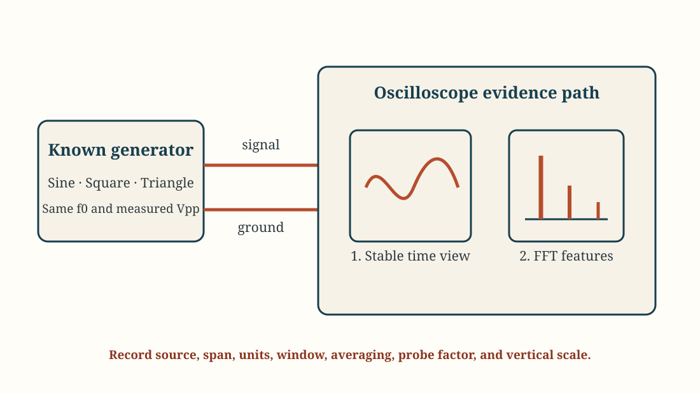

Laboratory
Lab 05 · Week 5 · October 2, 2026
Signal ID CTF - Spectrum, SNR, and Capacity
Build spectral fingerprints, classify unknown signals, and quantify how noise constrains a channel
Learning Outcomes
By the End of This Lab
- Configure an oscilloscope FFT and preserve the settings needed to interpret a spectrum
- Compare time-domain and frequency-domain evidence for known sine, square, triangle, sawtooth, and pulse waves
- Classify unknown instructor-provided signals from observable spectral features and report confidence
- Calculate voltage-ratio decibels, SNR, and Shannon capacity from approved measurements or supplied data
- State what a spectrum supports without claiming message content, transmitter identity, or malicious intent
The Big Picture
What You Are Doing
- Learn a repeatable FFT setup using a known sine wave.
- Build a small reference library for sine, square, triangle, sawtooth, and pulse waveforms.
- Choose three of five unknown stations, measure their signals, and use each station's key recipe to decrypt its hidden message.
- Complete all five stations with measurements, explanations, and recovered messages to earn one bonus revision credit. Finish the required work first; the two additional stations are optional.
- Defend each classification from observed features and record the recovered message with your measurements.
- Analyze a supplied channel snapshot to calculate SNR and theoretical capacity.
- Separate signal description, classification, and attribution into appropriately limited claims.
Before Lab
Preparation
- Review fundamental frequency, harmonics, spectrum, bandwidth, noise floor, dB, SNR, and Shannon capacity
- Bring a calculator with logarithm functions and open the Lab 5 report before beginning
- Recall that FFT amplitudes depend on probe factor, vertical scale, record length, window, and reference conventions
- Use only instructor-provided generator configurations, captures, and receive-only data; do not inspect personal or unrelated signals
Student Resources
Lab Report and CTF Decryptor
Follow These Steps
Lab Walkthrough
Set Up a Known FFT Reference
- Keep the generator output disabled. Connect generator signal to the oscilloscope probe tip and generator ground to the probe ground. Set the physical probe and scope channel to
10x. - Open the Lab 5 report and record generator, oscilloscope, probe, and FFT-mode information.
- Configure the generator for the instructor-assigned sine wave with
0 Voffset. Enable the output and obtain a stable time-domain waveform before opening the FFT. - Follow the scope-specific FFT guide to set the source channel, span, vertical units, window, averaging, and peak measurement. Record the assigned settings in Table 1.
- Confirm that the assigned span shows the fundamental and several possible harmonics. Keep the same window, averaging, and span for every reference waveform.
- Confirm the largest spectral line agrees with the time-domain frequency. If it does not, correct scale, source channel, sampling, or probe settings before continuing.

Build Reference Fingerprints
- At the same fundamental frequency and approximately the same
Vpp, record time-domain and FFT observations for sine, square, triangle, sawtooth, and pulse waves. Use the instructor's ramp symmetry and pulse duty-cycle settings. - Use the generator's ramp mode with 50% symmetry for triangle (equal rise and fall times), and strongly asymmetric ramp mode for sawtooth (gradual change followed by a fast reset). If the generator lacks adjustable symmetry, obtain the instructor's triangle capture or approved source.
- For this lab, call a 50% rectangular waveform square and an unequal-duty rectangular waveform pulse. These names are the key convention for two members of the rectangular waveform family.
- For each waveform, identify the fundamental, visible harmonic numbers, relative harmonic pattern, and approximate occupied span above the displayed noise floor.
- Do not change FFT span, window, probe factor, or averaging between waveform types. If vertical scaling must change, record the change.
- Capture the square-wave reference with its fundamental and at least two visible harmonics labeled or identifiable.
- Explain why waveform shape can change while fundamental frequency remains the same.
Classify the Unknown Signals
- Choose three different unknown stations from U1-U5. Record each station ID, then select that station on the CTF decryptor to read its unique key recipe and ciphertext. Leave the generator settings and display cover in place.
- Observe the time-domain waveform and spectrum using the same workflow as the references. Record fundamental, harmonic pattern, notable additional tones, approximate occupied span, and noise-floor relationship.
- Select the narrowest classification supported by the evidence. The key uses the lowercase names sine, square, triangle, sawtooth, or pulse. Support the name with the time waveform and spectral features.
- Measure the quantities requested by the station's recipe. Use the recipe's units and rounding rules; concatenate the waveform name and rounded numbers without spaces or unit symbols.
- If a recipe uses amplitude, verify whether the FFT reads Vrms or dBV. Convert dBV using
Vrms = 10^(dBV / 20). If the FFT amplitude reference is unclear, use the scope's AC RMS reading, or calculateVrms = Vpp / (2 sqrt(2))for a clean sine wave, and record your method. A peak-voltage reading is not an RMS-voltage reading. - If a recipe uses duty cycle, measure high-state width and period in the time view and calculate
duty cycle = 100 t_high / T. - If a recipe uses period, measure one complete cycle in the time view, convert to microseconds, and round as instructed. Verify that it agrees with
T = 1 / f0from the FFT fundamental. - Enter your key and decrypt the station's message. Record the exact recovered text, preserving capitalization and underscores. The decryptor shows only the text inside the flag braces.
- The decryptor displays text for every entered key. If the result is garbled, check the station selection, waveform name, units, rounding, and measurements. Record the readable recovered message with measurement evidence; guessing alone does not earn the classification points.
- State confidence as high, medium, or low and identify one observation that most affected it.
- Capture one unknown with enough settings and features visible for another reader to evaluate the classification.
- Complete the evidence-map fields for that unknown: direct observation, supported classification, confidence, and one unsupported attribution claim.
- The spectrum supports the waveform classification and measurement key. Message content comes from decrypting the supplied ciphertext; the spectrum alone does not identify a transmitter, user, ownership, or intent.
Quantify SNR and Capacity
- Everyone analyzes the same security-link scenario below using supplied data. This calculation does not require adding noise to the CTF stations or measuring total noise from their FFTs.
- Scenario: a security telemetry link needs
300 kbit/sin a100 kHzchannel. The desired signal is0.100 Vrms; baseline noise is0.010 Vrms, increasing to0.050 Vrms. These are separately supplied RMS components across equal impedance; the signal and bandwidth remain fixed. Treat the noise as additive white Gaussian noise for the Shannon model. Use these values, not individual FFT-bin heights, for the calculations. - Calculate
SNRdB = 20 log10(Vsignal,rms / Vnoise,rms). Convert to linear ratio usingSNRlinear = 10^(SNRdB / 10). - Calculate Shannon capacity using
C = B log2(1 + SNRlinear). Record bandwidth in hertz and capacity in bits per second. - Analyze the increased-noise condition using the same bandwidth. Calculate the new SNR and capacity, then quantify the capacity loss.
- Compare each capacity with the required
300 kbit/s. A capacity below the requirement means the modeled channel cannot reliably sustain that rate. A capacity above it is an upper bound and does not guarantee actual throughput. - Explain why Shannon capacity is a theoretical upper bound for the stated model rather than a measured application throughput.
Finish and Submit
- Complete all three content tables and verify units, dB signs, linear SNR conversion, bandwidth, and capacity calculations.
- Include measurements, keys, explanations, and recovered messages for your three required stations. For the bonus revision credit, complete the two optional rows to document all five distinct stations to the same standard. Extra stations do not replace the SNR/capacity exercise.
- Complete the Evidence section with the square-wave reference and one unknown signal. Verify that both captures show readable axes, units, useful features, and relevant FFT settings.
- If a feature is near the noise floor or outside the displayed span, mark it uncertain rather than absent.
- Complete the Conclusion in your own words. Compare the strongest reference fingerprint with the unknown, explain the noise/capacity result, and state one attribution limit.
- Disable the generator, return the scope and probe to the approved starting state, close only your assigned files, and restore the bench.
- Save the completed report, export it as a PDF, and submit the PDF through Learning Suite.
Why This Lab Matters
- Spectral fingerprints can reveal that a signal exists and suggest its waveform family without decoding its content
- Measurements unlock an encrypted classroom message; the predictable keys are a puzzle and are unsuitable for protecting confidential data
- SNR and channel capacity quantify how interference or noise reduces communication reliability
- Reproducible settings and confidence statements prevent visually persuasive spectra from becoming unsupported attribution claims
- All observations remain limited to instructor-provided bench signals, captures, and explicitly approved receive-only demonstrations
Submission
- Complete the individual Lab 5 report and submit it in PDF form through Learning Suite